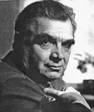
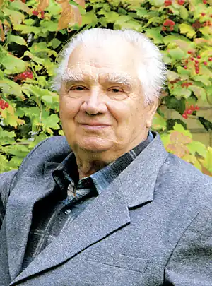

ЮРІЙ МУШКЕТИК
(Нар. 1929 p.)
Юрій Мушкетик — визнаний майстер сучасної української прози. За три десятиліття літературної праці ним опубліковано більше десяти романів, низку повістей і збірок оповідань, написано кілька п'єс. За роман "Крапля крові" автора відзначено Республіканською премією ім. М. Островського (1965), за роман "Позиція" — Державною премією УРСР ім. Т. Г. Шевченка (1980). Народився Юрій Михайлович Мушкетик 21 березня 1929р. в с. Веркиївці на Чернігівщині. Батько працював тоді вчителем, мати брала участь в організації перших созів, потім багато років очолювала колгосп. Уже з дитячих літ майбутній письменник пройшов звичну школу сільського виховання. Дитинство Ю. Мушкетика, як і інших його ровесників, було жорстоко обірване війною. Особисті враження про ті драматичні часи згодом ляжуть в основу повісті "Вогні серед ночі" (1959), знайдуть відображення в ряді воєнних новел Ю. Мушкетика, немало прислужаться в написанні "окупаційної", "партизанської" частини роману "Жорстоке милосердя" (1973). А нелегкі повоєнні роки в житті поліського села (і авторовому власному) стануть предметом зображення в повісті "Чорний хліб" (1960), що утворює своєрідну дилогію з повістю "Вогні серед ночі". 1953р. Ю. Мушкетик закінчує Київський університет, потім ще три роки навчається в аспірантурі при кафедрі української літератури. Літературний дебют Ю. Мушкетика припадає на 1954р., коли "Радянський письменник" опублікував його перший твір — повість "Семен Палій". Тоді ж вона вийшла друком у перекладі російською мовою в журналі "Дружба народов" і окремим виданням у видавництві "Молодая гвардия". Повість була прихильно зустрінута критикою і читачем. Однак і в композиції твору, і в обрисовці персонажів ще відчувалась недосвідченість автора. Згодом Ю. Мушкетик істотно доробить повість — новий її варіант опубліковано в двотомнику його творів ("Дніпро", 1979). Письменницька недосвідченість деякою мірою позначилася і на історичному романі "Гайдамаки" (1957). Серед факторів, які сприяли зверненню письменника до сучасності, її "гарячої" проблематики, значну роль відіграла його тривала редакційно-журналістська робота (починаючи з 1956р., він упродовж двох десятків літ працює в редакції журналу "Дніпро" — відповідальним секретарем, а згодом і головним редактором). Першим його кроком на тому полі став роман "Серце і камінь" (1962). А наступні твори — передусім роман "Крапля крові" (1964), почасти й "Останній острів" (1969), збірка новел "Зеленеє жито" (1965), повість "День пролітає над нами" (1967) — визначили основну лінію подальшого творчого розвитку письменника. Цікавим свідченням дальшого творчого поступу є одна з пізніших повістей Ю. Мушкетика "Старий у задумі" (1974). Досить незвичні для Ю. Мушкетика фантастично-пригодницька повість "З'їж серце лева" (1972), адресована в основному юному читачеві, та художньо-документальна — "На круті гори" (1976). В першій — печерні леви, мамонти, низка пригод, що трапляються з нашими далекими пращурами десь у часи середнього палеоліту, і їхня боротьба за те, щоб стати людьми, їхнє людське самоусвідомлення. В другій мовиться про видатного вченого В. М. Глушкова. Новим витком у розвиткові таланту Ю. Мушкетика стали романи й повісті 70 — 80-х років — "Жорстоке милосердя" (1973), "Біла тінь" (1977), "Смерть Сократа", "Біль", "Суд над Сенекою" (1978), "Позиція" (1979), "Вернися в дім свій" (1981), "Віхола" (1982), "Рубіж" (1984), "Обвал", "Жовтий цвіт кульбаби", "Сльоза Офелії" (1985), "Яса" (1987).